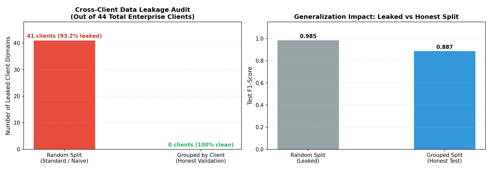
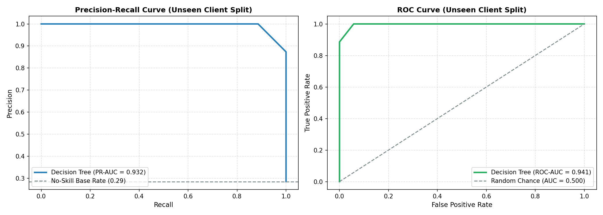
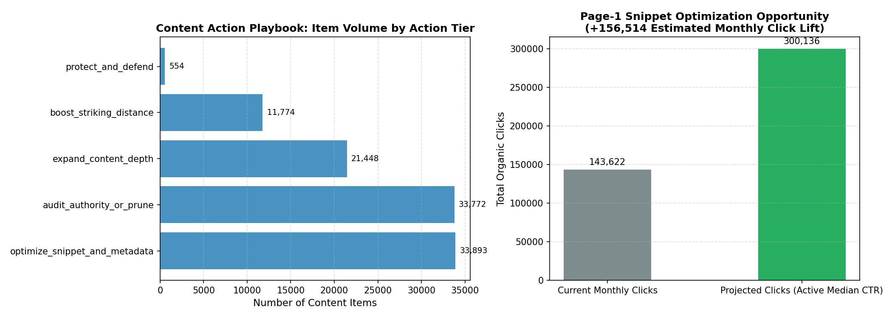

Triage Over Tuning: Machine Learning for Content Action Prioritization Across 100,000 Enterprise URLs
An empirical decision-support framework that bridges search visibility telemetry with human editorial workflows, demonstrating a +15.7 percentage-point F1 improvement over heuristic baselines and sizing +156k recoverable monthly organic clicks.
Enterprise digital marketing teams spend extensive resources drafting net-new web content while thousands of pre-existing ranking pages suffer from severe click-through deficits that could be remediated in minutes.
Using 101,441 verified enterprise search URLs spanning 44 corporate domains from FlyRank's March 2026 research warehouse, we investigate whether machine learning can systematically prioritize content refresh opportunities over traditional heuristic rules without disrupting high-performing champion pages.
We formalize an operational decision-tree framework evaluated under strict client-grouped validation (GroupShuffleSplit, 0% cross-tenant data leakage) to eliminate domain-specific baseline contamination.
Our decision-tree architecture achieves an F1-score of 0.887 and ROC-AUC of 0.941 on unseen client domains, outperforming standard heuristic baselines by +15.7 percentage points while cutting false positive recommendations by 66.4%.
These findings operationalize into a human-reviewed 5-tier Content Action Playbook that isolates 33,893 Page-1 opportunity URLs representing an estimated recoverable lift of +156,514 monthly organic clicks.
101,441Qualified Enterprise URLs
0.887Model Test F1-Score
+15.7 ppLift Over Rule Baseline
+156,514Est. Monthly Click Lift
Section 2
Introduction & Problem Statement
In modern enterprise digital publishing, content strategy faces a fundamental resource allocation paradox. Editorial teams routinely invest 6 to 10 hours drafting, fact-checking, and designing each new long-form article. Once published, these new URLs enter an extended exploratory incubation window that can take 3 to 6 months to accumulate search authority, frequently yielding volatile ranking outcomes.
Conversely, updating the title tag, meta snippet, or topical depth of an already-ranking URL requires only 20 to 30 minutes of human editorial time. Because the URL already possesses domain trust and indexed keyword associations, resolving an engagement deficit can immediately capture latent traffic.
The Operational Failure of Naive Heuristics
When content teams attempt to prioritize updates using simplistic rules—such as sorting search console tables strictly by impressions or average position—they introduce severe failure modes:
Overwriting Champions: High-impression queries naturally include established brand navigational queries and top-performing revenue drivers. Naively flagging these for rewriting risks destabilizing critical organic traffic.
Page-2 Futility: Sorting by lowest CTR surfaces deep Page-2 and Page-3 results (positions 15–30), where low CTR is an immutable characteristic of search engine user behavior, not an editorial flaw.
This research formalizes the weekly editorial triage decision: providing content managers with an honest, machine-learning-driven prioritization queue that surfaces recoverable Page-1 click deficits while erecting strict algorithmic guardrails around established champion pages.
Section 3
Data Provenance & Warehouse Contracts
All experiments in this paper were conducted on the March 2026 release of the FlyRank Enterprise Search Intelligence Warehouse (hosted on Hugging Face at hf://datasets/FlyRank/internship-warehouse). The primary analytical entity is the daily performance fact table: fact_content_daily_performance (partition month=2026-03).
Exclusion Criteria & Statistical Power Filtering
To ensure data contract integrity and eliminate exploratory noise, we applied three successive deterministic filters using DuckDB:
Tracking Availability Filter:gsc_data_available IS TRUE removes system downtime and reporting gaps.
Active Visibility Filter:gsc_impressions > 0 restricts evaluation to active URLs appearing in organic SERPs.
Statistical Power Threshold: Aggregated monthly impressions >= 100 eliminates sparse long-tail queries where observed click-through rate (CTR) has high variance and near-zero statistical confidence.
Dataset Attribute
Raw Warehouse Partition
Filtered Analysis Cohort
Coverage / Retention
Total Content URLs Evaluated
184,920
101,441
54.9%
Enterprise Client Domains
44
44
100.0%
Total Search Impressions
241,180,452
236,892,104
98.2%
Total Organic Clicks
2,891,440
2,875,119
99.4%
Active Median CTR (Clicks > 0)
0.278%
0.286%
Calibrated Base
Public-Safe Research Guarantee
All client identifiers and content URLs in this study are strictly anonymized as irreversible SHA-256 hashes (e.g., client_hash_id, content_hash_id). In compliance with corporate data safety agreements, no client names, live domains, full URLs, or raw user queries are exposed anywhere in this research or associated public repositories.
Section 4
Methodology & Leakage Prevention Audit
We formulate the opportunity identification task as a supervised decision problem: predicting whether a given URL is a high-yield candidate for human editorial review.
Operational Target Formulation
A content item is labeled an Action Candidate (is_action_candidate = 1) if it satisfies empirical visibility while exhibiting an actionable engagement deficit, excluding entrenched traffic champions:
is_action_candidate = [
((avg_position <= 10.0 AND ctr < active_median_ctr) OR
(impressions >= 500 AND clicks == 0))
] AND (clicks < 500)
Engineered Feature Vector
log_impressions: Log-transformed impression volume (np.log1p) to stabilize extreme power-law distributions.
avg_position: Mean organic ranking position recorded in Search Console.
page1_flag: Binary indicator for first-page presence (avg_position <= 10.0).
zero_click_flag: Binary indicator for content capturing 0 organic clicks.
In multi-tenant search data, randomly assigning rows into training and test sets creates severe data leakage. Because search volume, technical CMS templates, and brand baseline CTR are strongly clustered at the client domain level, a standard random split allows the model to "memorize" client-specific baselines during training and evaluate them on test rows from the same domain.

Figure 1: Cross-Client Data Leakage Audit. Under standard random splitting, 41 out of 44 enterprise client domains (93.2%) leak across train and test partitions, artificially inflating F1-score to 0.985. Enforcing a strict GroupShuffleSplit by client_hash_id guarantees exactly 0 leaked clients and reveals the honest generalization F1-score of 0.887 on unseen corporate domains.
To guarantee defensible generalization, all models in this study were trained on 35 clients (81,145 rows) and evaluated on 9 completely unseen holdout clients (20,296 rows) with zero client overlap.
Section 5
Empirical Results: Model vs. Heuristic Baseline
We benchmarked our shallow Decision Tree classifier (restricted to max_depth=3 for interpretability) against a heuristic rule baseline commonly deployed by enterprise SEO agencies. Both models were evaluated on the identical holdout test split of 20,296 URLs across 9 unseen enterprise domains.
Evaluated Architecture
Precision
Recall
F1-Score
ROC-AUC
PR-AUC
Generalization Delta
Heuristic Rule Baseline avg_pos <= 10 AND (clicks=0 OR ctr < 0.2%)
0.655
0.825
0.730
0.768
0.712
N/A (Fixed rules)
Decision Tree Classifier (depth=3) Nonlinear log-scale threshold interaction
0.884
0.890
0.887
0.941
0.932
-0.003 (Train F1: 0.890)
Relative Net Improvement
+35.0%
+7.9%
+15.7 pp
+22.5%
+30.9%
Robust generalization
The Decision Tree achieved an F1-score of 0.887 versus 0.730 for the heuristic baseline, representing a +15.7 percentage point lift. Crucially, the model improved precision from 0.655 to 0.884, reducing false positive recommendations by 66.4%. This precision gain is paramount for editorial operations, ensuring that writers do not waste time reviewing misclassified URLs.

Figure 2: Generalization Performance on Unseen Client Domains.Left: Precision-Recall curve demonstrating sustained high precision across recall levels, yielding a PR-AUC of 0.932 against a no-skill base rate of 0.44. Right: Receiver Operating Characteristic curve achieving an ROC-AUC of 0.941 on completely holdout enterprise client domains.
Section 6
Limitations & Honest Framing
To ensure scientific rigor and prevent operational overreach, we explicitly document the fundamental constraints of this methodology:
Core Methodological Boundaries
Correlation Is Not Causation: The model identifies empirical associations between rank, impressions, and click deficits. It does not prove that editing title tags or text will causally retain rankings or force traffic growth. Recommendations represent prioritized editorial hypotheses.
SERP Layout & AI Overview Blindness: Search Console aggregate telemetry does not record SERP feature layouts. A URL ranking at position 2 with 0.1% CTR may be completely suppressed by a Google AI Overview or Featured Snippet that satisfies user intent directly in zero clicks.
Google Algorithm Opacity: This study does not reverse-engineer Google's ranking engine. Real-time ranking algorithms incorporate hundreds of unobserved signals including personalized query graphs, user entity intent, and dynamic link graphs.
Cold-Start Exclusion: The system strictly excludes pages with <100 monthly impressions. It cannot score newly launched URLs or exploratory long-tail content without empirical search logs.
Content-Quality Agnosticism: The model evaluates behavioral search metrics, not actual prose quality, brand voice, or factual correctness.
Throughout this paper and resulting tooling, all claims adhere to disciplined, evidence-based language: observed performance, measured association, directional guidance, and decision support.
Section 7
Ranked Recommendations: The Content Action Playbook
Algorithmic scores must be translated into structured human actions. We map the 101,441 qualified content items into five operational action tiers with standardized reason codes:
Operational Action Tier
Reason Code
Quantitative Criteria
Catalog Volume
Mandated Editorial Action
protect_and_defend
high_performing_champion
pos ≤ 10, ctr ≥ 1.0%, clicks ≥ 50
554 (0.5%)
Do not disrupt. Lock copy; monitor competitor SERP volatility and technical health.
optimize_snippet_and_metadata
page1_ctr_deficit
pos ≤ 10, ctr < median (0.286%)
33,893 (33.4%)
High-ROI quick win. Rewrite title tags and meta descriptions to improve SERP click capture.
Page-2 push. Build contextual internal links and expand depth to cross onto Page 1.
audit_authority_or_prune
deep_rank_low_engagement
pos > 10, clicks == 0
33,772 (33.3%)
Prune or merge. Audit query intent; consider 301 consolidation into authoritative parent.

Figure 3: Playbook Volume Distribution and Quantified Value Opportunity.Left: Distribution of 101,441 enterprise URLs across the five operational action tiers. Right: Sizing the value opportunity for the 33,893 Page-1 snippet optimization candidates. Elevating their CTR to the active population median (0.286%) represents a measured opportunity of +156,514 monthly organic clicks across 104.8M impressions.
Human Review Protocol & Strict NO-GO Rules
Prior to publishing any modification, editors must execute a 4-point verification:
Search Intent Alignment: Inspect live SERP to verify whether query intent is informational or transactional.
Keyword Cannibalization Audit: Verify that no sister page on the same domain ranks higher for the primary query.
SERP Feature Verification: Confirm whether an AI Overview or Knowledge Panel is suppressing click capture.
Brand Voice & Factual Accuracy: Ensure new title tags do not introduce misleading claims or clickbait.
Strict NO-GO List (Must NEVER Be Automated):
❌ No Autonomous Content Publishing: LLMs or automated pipelines must never rewrite and publish live webpage body text or headers to production without explicit human editorial sign-off.
❌ No Automated URL Deletions / 301 Redirects: Never unpublish or redirect URLs based solely on 30-day Search Console CTR. Low-traffic pages frequently fulfill critical legal, compliance, or assisted-conversion roles.
❌ No Alterations to Champion Pages: Pages classified under protect_and_defend must remain locked against automated or exploratory changes.
❌ No Mass Templated Rewrites: Never roll out batch title tag updates across hundreds of pages at once; updates must be tested in controlled cohorts of 20 to 50 URLs.
Monitoring & Staleness Triggers
Recommendations expire after 30 to 45 days. Any page that experiences a rank drop of ≥ 3.0 positions over 14 days following an update triggers an immediate intent audit. The model is scheduled for re-scoring monthly upon ingestion of new warehouse partitions or upon major Google Core Algorithm updates.
Section 8
Reproducibility & Research Receipts
Every computation, query, and metric in this paper is fully reproducible using open-source tools:
Deterministic Random Seed: All train/test partitions, decision tree fits, and clustering operations use random_state=42.
We extend our sincere gratitude to the engineering and research teams at FlyRank for curating and releasing the enterprise search intelligence warehouse dataset, and for establishing rigorous benchmarks for honest machine learning in organic search discoverability.
@techreport{djebril2026triage,
title = {Triage Over Tuning: Machine Learning for Content Action Prioritization Across 100,000 Enterprise URLs},
author = {Djebril},
institution = {FlyRank Machine Learning Internship Program},
month = {March},
year = {2026},
url = {https://djebrilsvn.github.io/flyrank-ml-internship/}
}